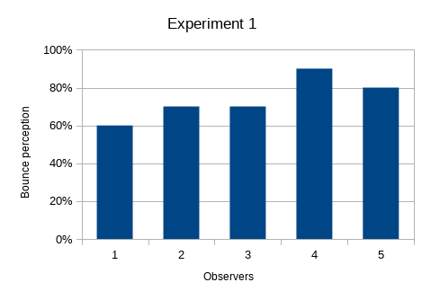
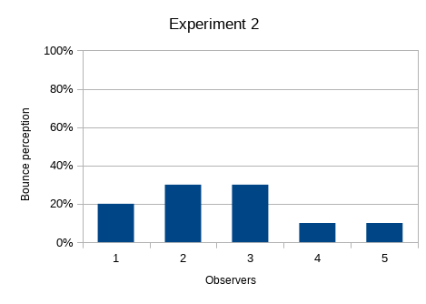
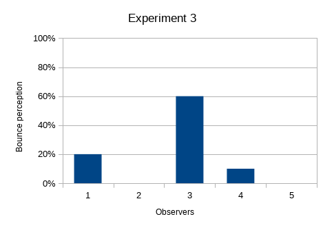
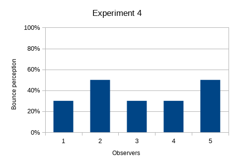

The results summarized in the bar chart Experiment 1 are consistent with the results in Sekuler et al. (1997), that is, when a brief sound is played at the moment the targets coincide, biases perception toward bouncing. We can say then that the designed GUI does not affect the bounce induction effect. From a total of 50 tests (5 observers and 10 tests per observer), 74% of them were perceived as a bounce.
 Results of the Experiment 1As we can see in the bar chart Experiment 2, contrary to the previous experiment, none of the observers perceived a bounce in more than 3 of the tests. In fact, only 20% from the total 50 tests were perceived as a bounce.
This pattern of results indicates that the nature of the sound does affect the bounce induction effect. In our case, the chosen sound for this experiment causes an attenuation of the bounce inducing effect of 54%, from 74% to 20% (Experiments 1 and 2).
 Results of the Experiment 2The bar chart Experiment 3 shows the results for when the "whoosh" sound is played 200ms before the dots coincide in the same point. The mean bounce perception is 18% (for 50 tests), but we can see how one of the observers have perceived many more bounces than the others, incrementing the variability of the data. If we omit the data of the observer 3 in the analysis, the mean is now 8% and the deviation from the mean is reduced to a maximum of 12%.
Despite of including or not the Observer 3 into the analysis, the results show that, as theorized in the Description section, the different nature of the sound make important the moment in which it is played. Comparing the results of Experiments 2 and 3, the attenuation of the bounce induction effect is reduced another 2%/12%, from 20% to 18%/8%.
 Results of the Experiment 3Contrary to the previous experiment, the bar chart Experiment 4 now shows the results for when the "whoosh" sound is played 200ms after the dots coincide in the same point. The data in this case has an acceptable variability and the mean bounce perception is 38%. It could be expected, as the sound is heard after the "collision", the results should be related to no-sound tests of Watanabe et al. (2001), where the bounce perception was close to 0%.
Nevertheless, these unusual results show how the bounce perception is not close to 0% but even higher than when the sound was played when the dots coincided in the same point (20%, Experiment 2). No explanation has been found for the increment in the bouce perception, so a further analysis is required in order to analyse it. However, we theorize that it could be related to the fact that the round of tests was done starting from the Experiment 1 and ending with the Experiment 4, in order. The observers, seeing that the Experiment 4 is clearly different to the previous two experiments (somehow similar, as two of the observers asked what was the difference between experiments 2 and 3), are induced to think that the results of this last Experiment must be different too.
 Results of the Experiment 4